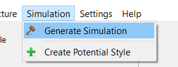
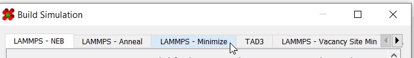
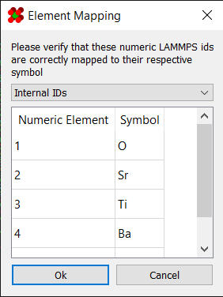
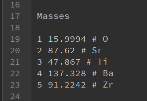
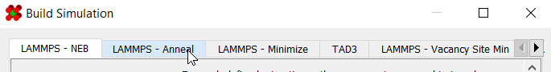

Annealing From Scratch
This section will guide you through annealing a structure from scratch. For this, the basic steps are:
Note
This program is not designed to create structures. You must already have a structure ahead of time!
1) Import Structure
Load your structure into the program:


You should now see the structure in the viewport:

2) Generate Minimizer
Go to Simulation > Generate Simulation to launch the
simulation generator dialog:

Switch to the minimizer simulation:

Enter parameters for your simulation. An explanation of all the fields can be found here. Once ready, click "Ok" to generate.
3) Run the Minimizer
Upload the resulting files to your cluster using the method of your choice (scp, FileZilla, etc.)
To run the simulation, navigate to the directory containing your simulation files and run the command:
sbatch slurm-mpi-main.sh
The minimizer may require some time to run. Once it's finished, you
can retrieve the resulting structure from /logs/[NAME]-min.dat
4) Generate Annealer
First, load the newly minimized structure back into the program.
Since you're loading a LAMMPS .dat file, the program may prompt
you to match the numeric IDs in the file with their symbols:

If you do not know which IDs correspond to which element, locate
the [NAME].dat structure file in the Assets folder of the
minimizer. The Masses section should list the element with a
comment:

Next, go to Simulation > Generate Simulation to launch the
simulation generator dialog as before:
Switch to the annealer simulation:

Enter parameters for your simulation. An explanation of all the fields can be found here. Once ready, click "Ok" to generate.
5) Run the Annealer
Upload the resulting files to your cluster using the method of your choice (scp, FileZilla, etc.)
To run the simulation, navigate to the directory containing your simulation files and run the command:
sbatch slurm-mpi-main.sh
The annealer may require some time to run. Once it's finished, you
can retrieve the resulting structure from /logs/[NAME]-anneal.dat